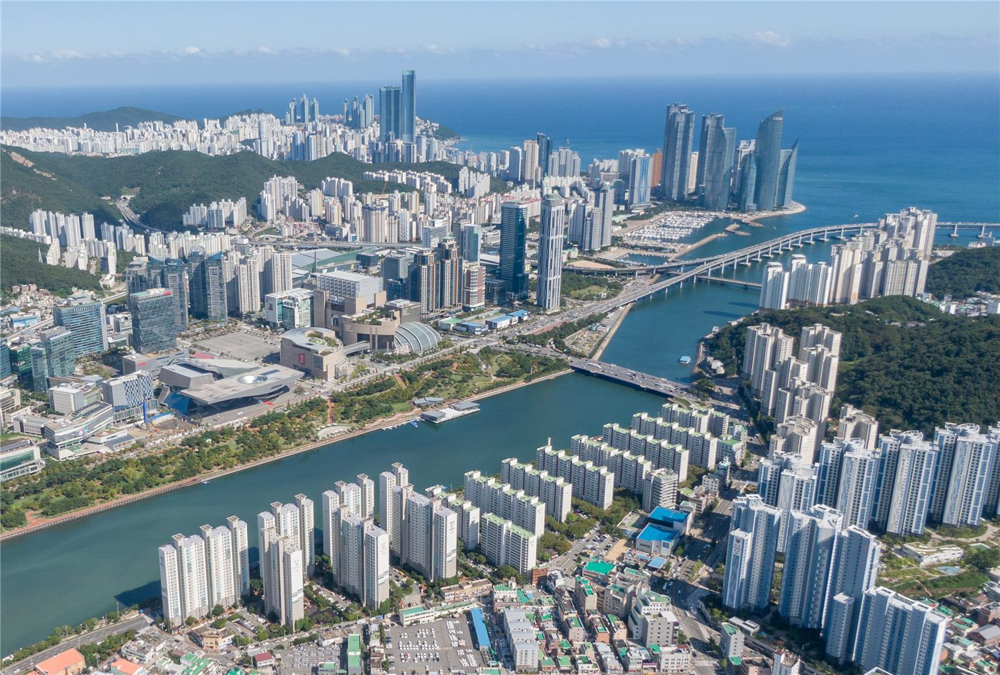

부산 예인선 침몰 실종자, 포항 해변에서 발견… 수색 국면 전환
부산 앞바다에서 침몰한 예인선의 실종자 1명이 포항 해변에서 시신으로 발견됐다. 사고 해역에서 상당히 떨어진 지점으로, 해류 이동 경로에 대한 분석이 이어진다.
여년재 기자 · 2026.09.12
橋한국

부산 해역에서 발생한 예인선 침몰 사고의 실종자 1명이 포항의 한 해변에서 시신으로 발견됐다. 당국은 신원 확인 절차를 진행 중이다.
광고 문의 · 300×250발견 지점은 사고 해역에서 상당히 떨어져 있어, 해류와 바람의 영향으로 표류한 것으로 추정된다. 당국은 잔여 실종자 수색 범위를 조정하고 있다.
예인선 사고는 선박 자체 크기가 작고 예인 대상 선박·바지선과의 연결 상태가 사고 양상을 좌우해, 원인 규명에 시간이 걸리는 경우가 많다.
해양 당국은 기상 조건과 항적 기록, 통신 기록을 대조해 침몰 경위를 확인하는 절차를 밟고 있다. 선체 인양 여부와 시점은 아직 정해지지 않았다.
연안 어업과 항만 작업에 종사하는 인력 가운데는 외국인 선원 비중이 적지 않아, 사고 때마다 통역과 가족 연락 절차가 과제로 지적돼 왔다.
출처·참고 (사실 확인용 — 본문은 직접 재작성)
· https://www.khan.co.kr/
· https://www.khan.co.kr/